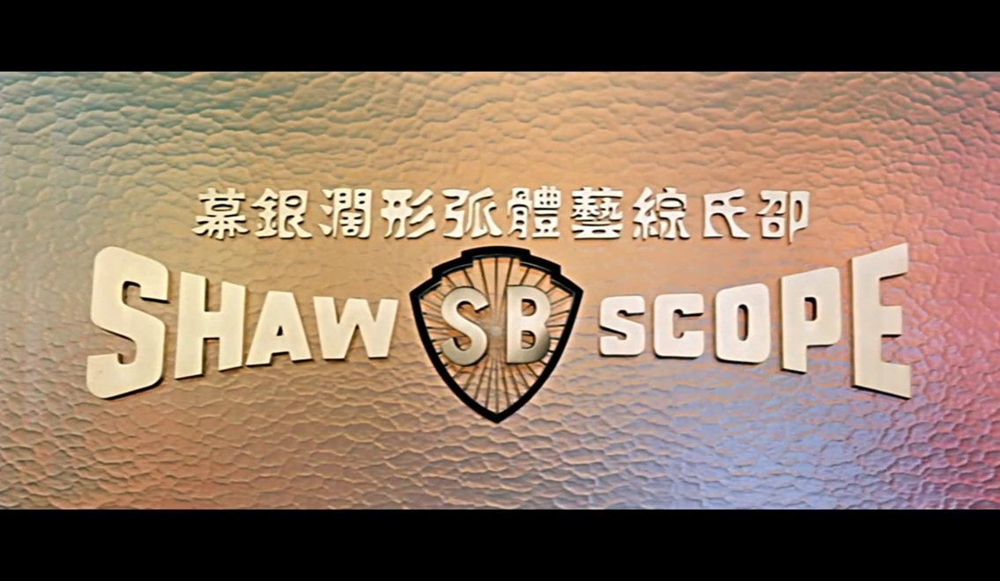
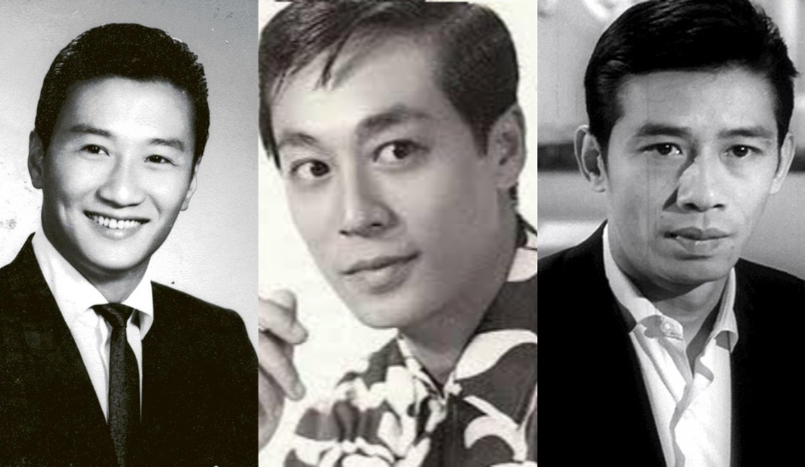
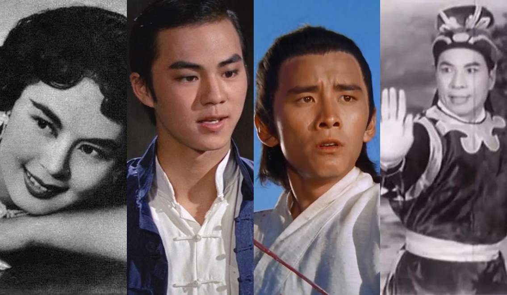
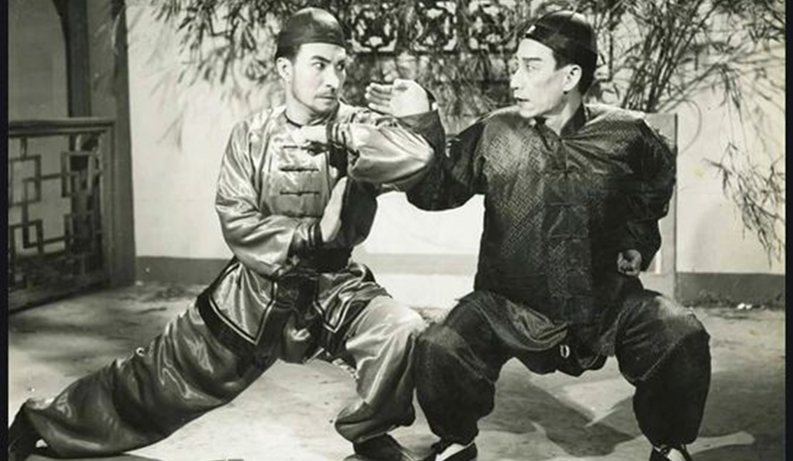

Tản Mạn Điện Ảnh Hongkong (P1)
Nhắc đến ngành phim xứ Cảng Thơm, cần quay ngược về quá khứ ở thời điểm bắt đầu. Góp phần định hình phong cách phim Hongkong khởi nguồn từ nhóm người nhập cư đến từ Thượng Hải. Họ di cư đến Hongkong do nhiều hoàn cảnh khác nhau, vốn là thuộc địa của Anh nên việc phát triển điện ảnh cũng thoải mái hơn. Khi chính phủ đặc khu không chủ trương hỗ trợ vốn cho phim ảnh thì hàng loạt nhà sản xuất sẵn sàng chi mạnh tay hơn, đầu tư cho công cuộc vươn mình của con rồng Châu Á.
Câu chuyện hãng SB - Shaw Brothers (Thiệu Thị) của Thiệu Dật Phu từng thống trị rạp chiếu phim, Hongkong như thế nào, cho đến khi Trâu Văn Hoài tách ra tự thành lập hãng Golden Harvest (Gia Hòa), dựng nên thời kỳ huy hoàng ra sao, đã để lại rất nhiều giai thoại. Thế còn trong những giai đoạn phát triển, ngành diễn xuất tại Hương Cảng đã có sự thay đổi gì?

(Logo hãng Thiệu Thị Huynh Đệ)
Ở thập niên 40 -50, thuở sơ khai ấy các diễn viên Hongkong tham gia đóng phim với phong cách diễn lấy từ nền tảng hí kịch. Phim Hongkong nói tiếng Quảng Đông, nam – nữ tài tử thoại bằng tiếng Quảng, nhưng là kiểu diễn vừa thoại vừa hát (đặc điểm được hiểu là dạng phim lai với cải lương – tuồng kịch). Tuy nhiên từ thập niên 50 trở đi, các nhà làm phim đến từ Thượng Hải đã thực hiện một cuộc cách tân. Họ tiếp thu tinh túy phương Tây, xây dựng kịch bản đa dạng hơn, đề tài phong phú hơn.
Diễn viên thời kỳ này có những cái tên quen thuộc như Tạ Hiền, Trương Anh Tài, Trần Bảo Châu, Hồ Phong, Lâm Đại… Lúc này thể loại phim kết hợp hí kịch đã gần như rẽ sang một nhánh riêng, đại diện tiêu biểu là hai huyền thoại Nhậm Kiếm Huy, Bạch Tuyết Tiên với tác phẩm kinh điển Đế Nữ Hoa.
Trong thập niên 50-60, đa số phim điện ảnh lớn do Thiệu Thị sản xuất là dòng phim nói tiếng Phổ Thông (tiếng Quan Thoại). Các phim sử dụng tiếng Quảng không được xem điện ảnh chính thống, những tác phẩm có Tạ Hiền, Thẩm Điện Hà, Trần Bảo Châu hay Lữ Kỳ tham gia cũng chỉ là phim kinh phí thấp. Diễn xuất của họ không cường điệu như lúc đóng phim hý kịch, nhưng vẫn có nét “gồng”, cho thấy là đang “diễn” nhiều hơn đang “sống” với nhân vật. Đa số phim đều lấy bối cảnh hiện đại, đề tài tình yêu, hài, tâm lý xã hội.

(Từ trái qua: Tạ Hiền, Tăng Giang, Hồ Phong)
Giai đoạn này đặc biệt khá quan trọng, từ đây đã hình thành chất riêng đặc trưng của phim Hongkong, văn hóa sinh hoạt, cách ăn uống, nói chuyện, cư xử…. Những quán ăn lề đường, tiệm trà sữa, khu chợ bình dân, hàng loạt bảng hiệu với đèn neon đủ màu nhấp nháy cũng bắt đầu được đưa vào phim.
Mô tuýp hài kiểu tình huống bi đát dở khóc dở cười, tình yêu của công tử và gái nhà giàu, về đặc vụ - siêu trộm, cảnh sát – tội phạm…, đều rất quen thuộc với các fan phim bộ TVB. Tất cả được sáng tạo dựa trên nền tảng văn hóa ở thập niên 50. Nhiều năm gần đây, khán giả cho rằng phim Hongkong mất chất, nếu bỏ qua yếu tố có liên quan đến khía cạnh chính trị, thì cái mất đi chính là phần “hồn” vốn đã được xây dựng từ cách đây hơn chục năm về trước.
Lối diễn xuất được phát triển từ kịch – tuồng cổ, cộng với quay phim trong điều kiện và bối cảnh thiếu thốn, khiến cho diễn viên thời ấy chỉ phát triển được cái “chất” của nhân vật. Những thứ thuộc về bề nổi, vẻ ngoài đều ổn, nhưng chưa thể đào sâu nội tâm vai diễn rõ nét hơn.
Phong thái đào hoa và ánh mắt phong lưu của Tạ Hiền được xem là thương hiệu, nhưng nó chỉ biểu hiện ở phần nhìn, tâm lý tính cách nhân vật mà ông hóa thân thì không được chú trọng cho lắm. Về thể loại cổ trang, nổi bật nhất trong văn hóa phim xưa tại Hongkong chính là loạt phim Hoàng Phi Hồng do Quan Đức Hưng đóng đối đầu cùng Kiên gian ác do Thạch Kiên đảm nhận. Bên cạnh đó còn có series Như Lai Thần Chưởng do Tào Đạt Hoa đóng vai chính.
Sức ảnh hưởng của những bộ phim “chưởng” ở thời kỳ đầu vẫn còn để lại dấu ấn ở thời đại sau này. Trong Tuyệt Đỉnh Kungfu của Châu Tinh Trì, phần soundtrack đặc trưng mang âm hưởng nhạc cụ dân gian Trung Quốc, được mượn và biến tấu lại từ chính phim Như Lai Thần Chưởng ở thập niên 60.

(Từ trái qua: Lâm Đại, Địch Long, Khương Đại Vệ, Tào Đạt Hoa)
Phim cổ trang lúc ấy có lối dàn dựng khá vụng về, các màn đánh đấm biên đạo sơ sài. Mỗi cú xuất chưởng thì kèm hiệu ứng theo tương tự hoạt họa, trang phục theo lối hát tuồng. Chính bởi vậy mà hiển nhiên diễn xuất cũng gượng gạo với đặc trưng chất kiếm hiệp. Khí khái đại hiệp, động tác phô trương của người trong võ lâm cũng được hình thành từ đây.
Những gì được cho là tinh túy nhất của khi ấy đã để lại ảnh hưởng trực tiếp đến phim truyền hình Hongkong, đại diện tiêu biểu là hai đài truyền hình RTV (sau đổi tên thành ATV) và TVB.
Quay các phim chiếu rạp do hãng Thiệu Thị sản xuất. Đây chính là khởi nguồn kỷ nguyên đưa điện ảnh Hongkong trở thành niềm tự hào của Châu Á. Phim chủ yếu nói tiếng Phổ Thông, đề tài và bối cảnh mang tầm vĩ mô hơn. Phong cách làm phim thể hiện cái tôi của đạo diễn và dụng ý nghệ thuật cũng được áp dụng. Nhiều tên tuổi diễn viên thời kỳ 60s – 70s của Thiệu Thị đều rất quen thuộc. Trịnh Phối Phối, Khương Đại Vệ, Địch Long, Lăng Ba, Phó Thanh, Lạc Đế…, họ đều là diễn viên điện ảnh chính hiệu.
Phim kiếm hiệp Hongkong qua tay các đạo diễn như Hồ Kim Thuyên, Trương Triệt đã tạo vị thế độc tôn trong thể loại võ thuật.
Các tác phẩm tiêu biểu gồm có Thiếu Lâm 36 Phòng, Thích Mã, Long Môn Khách Sạn, Độc Thủ Đại Hiệp, Độc Tí Đao,…
Bà của ngôi sao Hồng Kim Bảo, được xem là một trong những nữ diễn viên võ thuật đầu tiên của điện ảnh Hoa Ngữ.
Những cảnh quay slow motion đặc trưng trong bom tấn The Matrix (1999) chịu nhiều ảnh hưởng từ đạo diễn Ngô Vũ Sâm. Ông đã sử dụng thủ pháp này để khắc họa những trường đoạn hành động quan trọng, tạo được hiệu ứng thị giác giúp cho cảnh quay thêm phần ấn tượng, tạo thành thương hiệu cá nhân.
Tuy nhiên Ngô Vũ Sâm chỉ kế thừa và khai thác tính hiệu quả của việc sử dụng phong cách slow motion. Người đầu tiên áp dụng lối quay trên để thêm tính hoa mỹ, tăng phần điện ảnh cho khung hình chính là đạo diễn Trương Triệt (thầy của Ngô Vũ Sâm). Ngoài ra, “quái kiệt” Quentin Tarantino cũng là fan hâm mộ của dòng phim võ thuật Hongkong thời hoàng kim.

(Thạch Kiên (trái) và Quan Đức Hưng trong phim Hoàng Phi Hồng)
Lăng Ba và Lạc Đế, là hai nữ diễn viên đảm nhiệm bộ đôi Lương Sơn Bá – Chúc Anh Đài trong phim ca nhạc kinh điển cùng tên của đạo diễn Lý Hàn Tường. Trong phim, diễn xuất của cả hai đầy ăn ý, ngọt ngào tròn trịa. Tuy nhiên, vẫn thiên về thể hiện hình thể nhiều hơn bộc lộ nội tâm, thông qua cơ mặt và ánh mắt.
Còn các diễn viên chủ lực trong dòng phim võ thuật chủ yếu là yêu cầu đánh đấm, nên gần như khả năng biểu đạt cảm xúc của họ khá yếu. Số ít diễn viên như Khương Đại Vệ, nữ hoàng võ hiệp Trịnh Phối Phối, Đặng Quang Vinh…, là có thể diễn tốt trong các phim tình cảm, yêu cầu thể hiện nội tâm phức tạp.
Khi hãng Gia Hòa xuất hiện, sự thống trị ngành công nghiệp phim ảnh của Thiệu Thị gần như bị phá vỡ thế độc tôn. Đồng thời thiết lập một thời đại mới cho điện ảnh Hongkong.
(Bạch Tuyết Tiên (trái) và Nhậm Kiếm Huy)